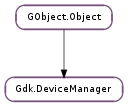

| get_client_pointer() | |
| get_display() | |
| list_devices(type) |
| Name | Type | Flags | Description |
|---|---|---|---|
| display | Gdk.Display | r/w/c | Display for the device manager |
| Name | Parameters | Return | Description |
|---|---|---|---|
| device-added | Gdk.Device | The ::device-added signal is emitted either when a new master pointer is created, or when a slave (Hardware) input device is plugged in. | |
| device-changed | Gdk.Device | The ::device-changed signal is emitted whenever a device has changed in the hierarchy, either slave devices being disconnected from their master device or connected to another one, or master devices being added or removed a slave device. If a slave device is detached from all master devices (Gdk.Device.get_associated_device () returns None ), its Gdk.DeviceType will change to Gdk.DeviceType.FLOATING, if it’s attached, it will change to Gdk.DeviceType.SLAVE. | |
| device-removed | Gdk.Device | The ::device-removed signal is emitted either when a master pointer is removed, or when a slave (Hardware) input device is unplugged. |
Bases: GObject.Object
In addition to a single pointer and keyboard for user interface input, GDK contains support for a variety of input devices, including graphics tablets, touchscreens and multiple pointers/keyboards interacting simultaneously with the user interface. Such input devices often have additional features, such as sub-pixel positioning information and additional device-dependent information.
In order to query the device hierarchy and be aware of changes in the device hierarchy (such as virtual devices being created or removed, or physical devices being plugged or unplugged), GDK provides Gdk.DeviceManager.
By default, and if the platform supports it, GDK is aware of multiple keyboard/pointer pairs and multitouch devices. This behavior can be changed by calling Gdk.disable_multidevice () before Gdk.Display.open (). There should rarely be a need to do that though, since GDK defaults to a compatibility mode in which it will emit just one enter/leave event pair for all devices on a window. To enable per-device enter/leave events and other multi-pointer interaction features, Gdk.Window.set_support_multidevice () must be called on Gdk.Windows (or gtk_widget_set_support_multidevice() on widgets). window. See the Gdk.Window.set_support_multidevice () documentation for more information.
On X11, multi-device support is implemented through XInput 2. Unless Gdk.disable_multidevice () is called, the XInput 2 Gdk.DeviceManager implementation will be used as the input source. Otherwise either the core or XInput 1 implementations will be used.
For simple applications that don’t have any special interest in input devices, the so-called client pointer provides a reasonable approximation to a simple setup with a single pointer and keyboard. The device that has been set as the client pointer can be accessed via Gdk.DeviceManager.get_client_pointer ().
Conceptually, in multidevice mode there are 2 device types. Virtual devices (or master devices) are represented by the pointer cursors and keyboard foci that are seen on the screen. Physical devices (or slave devices) represent the hardware that is controlling the virtual devices, and thus have no visible cursor on the screen.
Virtual devices are always paired, so there is a keyboard device for every pointer device. Associations between devices may be inspected through Gdk.Device.get_associated_device ().
There may be several virtual devices, and several physical devices could be controlling each of these virtual devices. Physical devices may also be “floating”, which means they are not attached to any virtual device.
Master and slave devices
carlos`sacarino:` ~$ xinput list ⎡ Virtual core pointer id=2 [master pointer (3)] ⎜ ↳ Virtual core XTEST pointer id=4 [slave pointer (2)] ⎜ ↳ Wacom ISDv4 E6 Pen stylus id=10 [slave pointer (2)] ⎜ ↳ Wacom ISDv4 E6 Finger touch id=11 [slave pointer (2)] ⎜ ↳ SynPS/2 Synaptics TouchPad id=13 [slave pointer (2)] ⎜ ↳ TPPS/2 IBM TrackPoint id=14 [slave pointer (2)] ⎜ ↳ Wacom ISDv4 E6 Pen eraser id=16 [slave pointer (2)] ⎣ Virtual core keyboard id=3 [master keyboard (2)] ↳ Virtual core XTEST keyboard id=5 [slave keyboard (3)] ↳ Power Button id=6 [slave keyboard (3)] ↳ Video Bus id=7 [slave keyboard (3)] ↳ Sleep Button id=8 [slave keyboard (3)] ↳ Integrated Camera id=9 [slave keyboard (3)] ↳ AT Translated Set 2 keyboard id=12 [slave keyboard (3)] ↳ ThinkPad Extra Buttons id=15 [slave keyboard (3)]
By default, GDK will automatically listen for events coming from all master devices, setting the Gdk.Device for all events coming from input devices. Events containing device information are Gdk.EventType.MOTION_NOTIFY, Gdk.EventType.BUTTON_PRESS, Gdk.EventType._2BUTTON_PRESS, Gdk.EventType._3BUTTON_PRESS, Gdk.EventType.BUTTON_RELEASE, Gdk.EventType.SCROLL, Gdk.EventType.KEY_PRESS, Gdk.EventType.KEY_RELEASE, Gdk.EventType.ENTER_NOTIFY, Gdk.EventType.LEAVE_NOTIFY, Gdk.EventType.FOCUS_CHANGE, Gdk.EventType.PROXIMITY_IN, Gdk.EventType.PROXIMITY_OUT, Gdk.EventType.DRAG_ENTER, Gdk.EventType.DRAG_LEAVE, Gdk.EventType.DRAG_MOTION, Gdk.EventType.DRAG_STATUS, Gdk.EventType.DROP_START, Gdk.EventType.DROP_FINISHED and Gdk.EventType.GRAB_BROKEN. When dealing with an event on a master device, it is possible to get the source (slave) device that the event originated from via Gdk.Event.get_source_device ().
In order to listen for events coming from devices other than a virtual device, Gdk.Window.set_device_events () must be called. Generally, this function can be used to modify the event mask for any given device.
Input devices may also provide additional information besides X/Y. For example, graphics tablets may also provide pressure and X/Y tilt information. This information is device-dependent, and may be queried through Gdk.Device.get_axis (). In multidevice mode, virtual devices will change axes in order to always represent the physical device that is routing events through it. Whenever the physical device changes, the Gdk.Device :n-axes property will be notified, and Gdk.Device.list_axes () will return the new device axes.
Devices may also have associated keys or macro buttons. Such keys can be globally set to map into normal X keyboard events. The mapping is set using Gdk.Device.set_key ().
| Returns: | The client pointer. This memory is owned by GDK and must not be freed or unreferenced. |
|---|---|
| Return type: | Gdk.Device |
Returns the client pointer, that is, the master pointer that acts as the core pointer for this application. In X11, window managers may change this depending on the interaction pattern under the presence of several pointers.
You should use this function seldomly, only in code that isn’t triggered by a Gdk.Event and there aren’t other means to get a meaningful Gdk.Device to operate on.
| Returns: | the Gdk.Display to which device_manager is associated to, or None. This memory is owned by GDK and must not be freed or unreferenced. |
|---|---|
| Return type: | Gdk.Display |
Gets the Gdk.Display associated to device_manager.
| Parameters: | type (Gdk.DeviceType) – device type to get. |
|---|---|
| Returns: | a list of Gdk.Device s. The returned list must be freed with GLib.List.free (). The list elements are owned by GTK+ and must not be freed or unreffed. |
| Return type: | [Gdk.Device] |
Returns the list of devices of type type currently attached to device_manager.